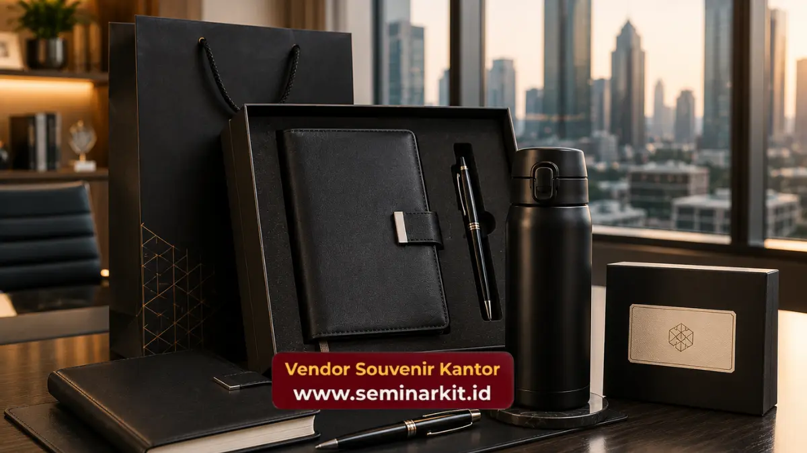

Souvenir kantor budget 50 ribu untuk seminar dan gathering umumnya berupa produk fungsional seperti notebook custom, tumbler, atau goodie bag berisi beberapa item kecil yang relevan dengan kebutuhan peserta acara.
Pemilihan jenis souvenir yang tepat dapat meningkatkan kesan positif peserta terhadap penyelenggara acara, sekaligus memperkuat branding perusahaan secara halus selama dan setelah acara berlangsung.
- Souvenir untuk seminar sebaiknya mendukung aktivitas peserta selama acara berlangsung, seperti notebook dan alat tulis.
- Souvenir untuk gathering karyawan cenderung lebih fleksibel dan dapat bersifat lebih santai.
- Jumlah peserta acara memengaruhi jenis dan skema pemesanan souvenir yang paling efisien.
- Kesesuaian souvenir dengan tema acara turut memperkuat kesan profesional penyelenggara.
Souvenir Apa yang Cocok untuk Acara Seminar dengan Budget 50 Ribu?
Souvenir yang cocok untuk acara seminar dengan budget 50 ribu umumnya berupa produk yang mendukung aktivitas belajar dan mencatat, seperti notebook custom logo, pulpen, dan tumbler sederhana.
Pada acara seminar, peserta umumnya membutuhkan alat tulis untuk mencatat materi yang disampaikan narasumber.
Oleh karena itu, souvenir berupa notebook dan pulpen custom logo tidak hanya berfungsi sebagai kenang-kenangan, tetapi juga memiliki nilai guna langsung selama acara berlangsung.
Selain alat tulis, tumbler juga menjadi pilihan yang relevan untuk acara seminar yang berlangsung dalam durasi cukup panjang, karena peserta cenderung membutuhkan wadah minum pribadi selama sesi materi berjalan.
Souvenir Apa yang Cocok untuk Acara Gathering Karyawan?
Souvenir yang cocok untuk acara gathering karyawan cenderung lebih fleksibel dan dapat mencakup produk dengan desain yang lebih santai, seperti tumbler warna-warni, gantungan kunci unik, atau goodie bag berisi beberapa item kecil.
Berbeda dengan acara seminar yang bersifat formal, acara gathering karyawan umumnya bertujuan mempererat kebersamaan tim, sehingga souvenir yang dipilih dapat memiliki nuansa yang lebih personal dan menyenangkan.
Meski demikian, elemen branding perusahaan tetap dapat dihadirkan secara halus melalui logo pada kemasan atau produk utama dalam goodie bag.
Kombinasi antara produk fungsional dan sedikit sentuhan personal pada desain souvenir dapat membuat karyawan merasa lebih dihargai, sekaligus tetap menjaga konsistensi identitas visual perusahaan pada setiap item yang dibagikan.
Bagaimana Menyesuaikan Souvenir dengan Jumlah Peserta Acara?
Penyesuaian souvenir dengan jumlah peserta acara penting dilakukan agar proses produksi dan distribusi souvenir dapat berjalan efisien tanpa kekurangan maupun kelebihan stok yang signifikan.
Untuk acara dengan jumlah peserta besar, sebaiknya dipilih jenis souvenir yang proses produksinya relatif cepat dan konsisten dalam skala besar, seperti gantungan kunci atau tumbler dengan desain sederhana.
Sementara itu, untuk acara dengan jumlah peserta lebih terbatas, perusahaan memiliki lebih banyak fleksibilitas untuk memilih kombinasi produk yang lebih variatif dalam satu paket souvenir.
Kejelasan jumlah peserta di awal perencanaan acara akan membantu proses produksi souvenir berjalan lebih terukur dan tepat waktu menjelang hari pelaksanaan.

Berapa Kisaran Waktu Persiapan Souvenir Sebelum Hari Acara Berlangsung?
Kisaran waktu persiapan souvenir sebelum hari acara berlangsung sebaiknya diperhitungkan sejak tahap awal perencanaan acara, mengingat proses produksi custom logo memerlukan waktu yang berbeda-beda tergantung jenis produk dan jumlah pesanan.
Untuk acara seminar maupun gathering yang sudah memiliki tanggal pasti, sebaiknya kebutuhan souvenir dikomunikasikan kepada vendor jauh sebelum hari pelaksanaan, agar tersedia waktu yang cukup untuk proses desain, produksi, hingga pengecekan kualitas sebelum pengiriman.
Persiapan yang terlalu mepet dengan tanggal acara berisiko menyebabkan keterlambatan distribusi souvenir kepada peserta.
Selain itu, penting juga mempertimbangkan waktu pengiriman souvenir ke lokasi acara, terutama apabila lokasi berada di luar kota atau memerlukan proses logistik tambahan, sehingga seluruh rangkaian persiapan dapat berjalan tepat waktu.
Bagaimana Souvenir Dapat Meningkatkan Pengalaman Peserta selama Acara?
Souvenir yang dipilih secara tepat dapat meningkatkan pengalaman peserta selama acara berlangsung, karena produk yang relevan dengan kebutuhan acara memberikan nilai tambah di luar konten acara itu sendiri.
Pada acara seminar, souvenir yang mendukung proses belajar seperti notebook dan alat tulis dapat membantu peserta lebih fokus mengikuti jalannya materi.
Sementara pada acara gathering, souvenir dengan nuansa yang lebih personal dapat memperkuat kesan kebersamaan dan apresiasi perusahaan terhadap karyawan yang hadir.
Pengalaman positif yang dirasakan peserta terhadap souvenir yang diterima secara tidak langsung turut membentuk persepsi mereka terhadap kualitas penyelenggaraan acara secara keseluruhan, termasuk citra perusahaan sebagai penyelenggara.
Kesimpulan
Souvenir kantor budget 50 ribu untuk seminar dan gathering sebaiknya disesuaikan dengan karakteristik masing-masing acara, baik dari sisi fungsi produk maupun jumlah peserta yang hadir.
Notebook dan alat tulis lebih relevan untuk acara seminar, sementara tumbler dan goodie bag lebih fleksibel digunakan untuk acara gathering karyawan.
Untuk mempersiapkan souvenir kantor budget 50 ribu yang sesuai dengan skala dan tema acara seminar atau gathering perusahaan Anda, kunjungi vendorsouvenirkantor.web.id dan konsultasikan kebutuhan acara Anda bersama tim kami.

Banner promosi: klik gambar untuk langsung terhubung ke WhatsApp tim sales.